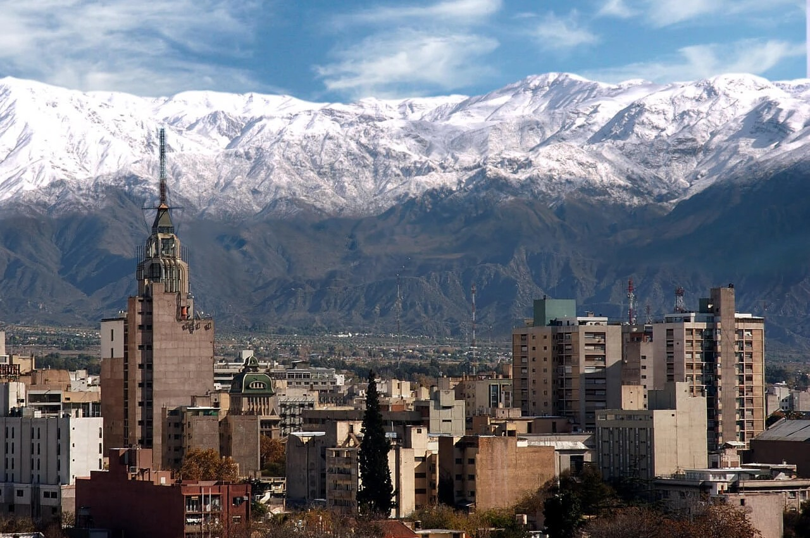

About me

Hello! my name is Dantto it's a weird I know but I feel that is unique, my closed friends and brothers call me "moogle" or "Chilote". I was born in Santiago Chile, I served as a full time missionary in the Chile Santiago South Mission in the years 2014-2015 after that, I moved to Mendoza Argentina when I got married since 2017 until now. It is a beautiful place to visit and live. I have been married for five years, my wifes names is Ivana. Also we have a beautiful daughter, her name is Ludmila, she is three years old. I decide to get a degree on aplied technology, web and computer programming. Desinging web pages it is something that call me to learn it and do it to the future. I love to dance, see some movies and series on streaming plataforms, I like the anime,play the guitar,soccer and play some video games. Also I decide to get a degree in web and computer programming because I found that i love this world of programming and I have the legacy from my Dad who is a programmer. Finally, I'm so greatful for this program pathway have been a blessing to me and to my family. i'm exited to know you and to learn with you.
Mendoza
Mendoza its located at the west of the andes mountains in Argentina who is the borther between Argentina and Chile, bordering on the south with Neuquen and north with San Juan, i would like to say that mendoza it look like utah but with a different weather, whe don't have snow in the city however in the mountains you always will find snow in the hills.